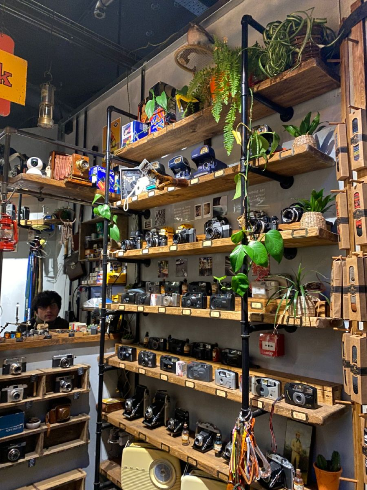

curated selection
every item is chosen with intention across four worlds: photo-video, audio, gadgets, and accessories.
about sys.9k
sys.9k is a curated retro store built around nostalgia, design, and collectible everyday tech. from film cameras and walkmans to handheld gadgets and small accessories, every piece is selected for its feeling as much as its function.

our idea
we focus on objects that feel tactile, memorable, and visually alive. older tech often carries more soul than modern mass-made products, and that is exactly what draws us in.
whether it is a compact digital camera, a cassette player, an old phone, or a tiny collectible accessory, each item in sys.9k is chosen for its shape, mood, and timeless appeal.
what matters here
every item is chosen with intention across four worlds: photo-video, audio, gadgets, and accessories.
we care about form, texture, mood, and how a product feels in real life, not only what it does.
the collection is not just for display. many of these pieces are still fun to use, collect, gift, and live with.
who it is for
sys.9k is for collectors, curious minds, design lovers, and anyone drawn to analog culture, early digital aesthetics, and objects with more personality than polish.
whether you are building a collection, buying your first retro camera, styling your room, or just browsing for something unusual, this space is made to feel personal, calm, and inspiring.
explore more
browse our categories and discover retro pieces selected for their design, nostalgia, and everyday charm.
shop now